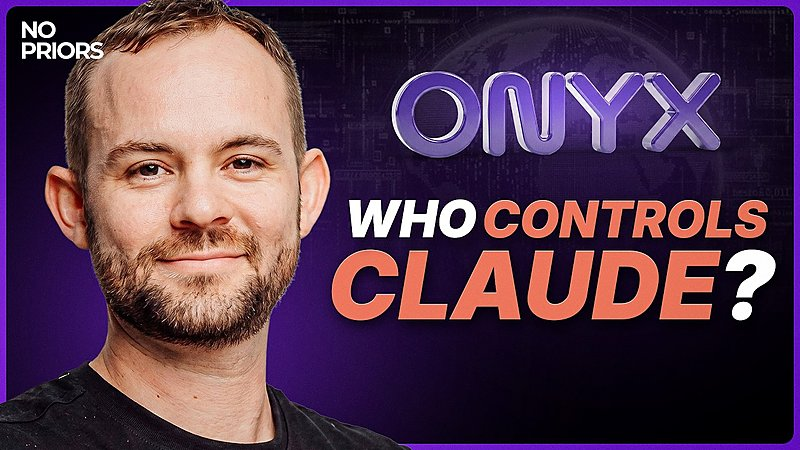

🤖
第二号
首页
AI 日报
深度调研
⌕
搜索
⌘K
搜索
搜索第二号知识库
×
AI 日报
深度调研
思维模型
Esc 关闭
AI 日报 · 2026年5月31日
Salesforce 用 Claude Code 把 231 天缩成 13 天：Agentic 开发的效率与质量双赢
Salesforce 全面转向 agentic 工作流，一个预估 231 天的迁移任务 13 天完成，单 PR 交付 21 个 API 端点、测试覆盖率 100%，总事故反降 5%。OpenAI Codex 负责人暗示里程碑级数据即将公布。Box CEO Aaron Levie 犀利点评：有人花 5 亿美元自建就证明 SaaS 价值远未被定价捕获。No Priors 播客聚焦 AI Agent 安全——一个正在发生但被严重低估的领域。
agentic 开发
Claude Code
Salesforce
Codex
SaaS 价值
Agent 安全
OpenClaw
5
焦点事件
1
深度播客
8
追踪 Builder
15
GitHub 项目
今日要点
🧠 Salesforce × Claude Code：231 天缩减到 13 天，质量不降反升。
Anthropic Claude Code 团队成员 Boris Cherny 分享：Salesforce 全面转向 agentic 工作流，一个预估 231 天的迁移任务实际 13 天完成，单 PR 交付 21 个 API 端点且测试覆盖率达到 100%。更关键的是 PR 数量增加但总事故下降了 5%——安全审查和代码质量直接内嵌进了 agent 工作流，而非事后补课。
👀 OpenAI Codex 里程碑数据即将公布。
OpenAI Codex & ChatGPT 负责人 Thibault Sottiaux 发推称看到一个让他"很开心"的仪表板数字，暗示近期会有官方消息。同时抛出尖锐问题："你还相信 benchmark 吗，还是只听朋友的推荐？什么会让你尝试一个新模型？" 545 条回复说明 AI 工具选型标准是行业共同痛点。
Agent 开发
Boris Cherny：真正获益的团队在改变工作方式，而非加速旧流程
Anthropic Claude Code 团队成员分享 Salesforce 的 agentic 转型案例。一个预估 231 天的迁移任务在 13 天内完成，单 PR 交付 21 个端点且测试覆盖率达到 100%。逆直觉的是，质量和速度同时提升——总事故下降了 5%。
"真正从 AI 中获得最大收益的团队，不是在加速他们已经在做的事——他们在彻底改变工作方式。哪些步骤可以删掉？哪些交接可以消除？哪些东西可以让 agent 端到端完全接管？"
查看原文 →
Salesforce 完整案例 →
工具趋势
Thibault Sottiaux：你还相信 benchmark 吗？
OpenAI Codex & ChatGPT 负责人连发两条重磅。第一条暗示 Codex 仪表板上有一个令人振奋的数字——"我们仍然很早，非常早"，暗示增长曲线仍在陡峭上升段。第二条抛出尖锐问题："什么会让你尝试一个新模型？benchmark 还是朋友推荐？" 545 条回复印证了工具选型标准缺失的行业痛点。
原文 ① →
原文 ② →
SaaS 价值
Aaron Levie：花 5 亿美元自建，是对 App 层最好的广告
Box CEO 针对某公司花 5 亿美元自建内部工具的新闻犀利点评：当有人愿意花九位数自建一个已经有 SaaS 产品的东西，说明这个品类的价值远远没有被 SaaS 定价捕获。这对整个软件行业应该是极度 bullish 的信号。
"App 层能得到的最好的广告，就是一家公司花 5 亿美元去自建一个版本。"
查看原文 →
Agent 生态
Peter Steinberger：OpenClaw 迎来新大将 Vince
OpenClaw 创始人宣布 Vince 加入团队。"极少数人真正理解软件被构建的新方式。他懂。" 同时一条获得 2774 赞的推文「I smell a takedown in 3...2...1」暗示行业内有争议正在酝酿。OpenClaw 在 agent 操作系统赛道上持续招兵买马。
查看原文 →
创业心法
Garry Tan：钱不是火，是汽油
YC CEO 给创始人的核心建议：不要混淆"缺钱"和"缺需求"。钱不能点燃商业——你需要先找到已被验证的火苗，钱只是加速燃烧的燃料。创始人应该先证明"人们足够想要它"，再考虑融资。
"钱不是火。钱是你浇在已经存在的火上的汽油。你没有融资问题，你有的是'人们还不够想要它'的问题。"
查看原文 →
深度播客
用 AI 监督 AI——Onyx Security 的 Agent 安全方案
No Priors 播客采访 Onyx Security CEO Maxim Bar Kogan。Onyx 是一家以色列安全创业公司，专做"用 AI agent 看守 AI agent"。当企业指数级采用自主 AI agent，传统安全工具完全失效——你需要一个专用的 AI 系统来裁决 agent 操作是否合法。

分级裁决架构：小模型直觉 + 大模型深审
Onyx 训练很小的专用模型处理 90% 的日常裁决，只在关键节点唤醒更强 agent 做深度审查。类比国际象棋——顶级棋手多数走子靠直觉，只在关键节点长时间计算。既控制成本又保证可靠。
当前企业 AI 使用结构
超过 50% 是自主编码 agent，约 45% 是低代码自动化（拖拽式），仅 2% 是企业自建的一方 agent。自主 agent 是增长最快的类别，且目前几乎没有任何安全控制。
身份安全为什么对 agent 失效
传统安全第一道防线是限制权限。但 AI agent 恰恰相反——我们希望给它尽可能多的权限来完成各种任务。不可能为 agent 定义"正确的权限集合"，整个身份安全范式需要重新设计。
企业为什么不信任大模型厂商做安全
Anthropic 和 OpenAI 是"数据饥渴"的公司，企业不愿意把 agent 历史行为数据交给它们做安全分析。Onyx 作为独立第三方可以获得这些数据来做行为基线分析。
Mythos 级别模型即将到来——现在就该投资 AI 安全
Maxim 建议所有企业立即投资 AI 安全基础设施，不要等。一旦有 Mythos 级别的开源/中国模型出现，来不及补课的企业将完全暴露。
为什么值得关注：
这期播客从
已经在部署的企业客户
那里拿到了真实数据，而不是空谈理论。AI agent 安全不是一个"未来的问题"——它现在就在发生。企业指数级采用自主 agent，安全基础设施却几乎为零。
🎧 观看播客 →
GitHub Trending · 5月31日
Agent 工具链与新开源项目持续活跃，微软 markitdown 入榜
harry0703/MoneyPrinterTurbo ⭐ 2,768 · Python
利用 AI 大模型，一键生成高清短视频。
GitHub →
microsoft/markitdown ⭐ 2,470 · Python
微软出品的文件转 Markdown 工具，支持 Office 文档等多种格式。
GitHub →
run-llama/liteparse ⭐ 925 · Rust
快速、友好的开源文档解析器，LlamaIndex 团队出品。
GitHub →
OpenBMB/VoxCPM ⭐ 779 · Python
VoxCPM2：免 Tokenizer 的多语言 TTS，支持创意声音设计和逼真声音克隆。
GitHub →
ruvnet/RuView ⭐ 655 · Rust
将商用 WiFi 信号转化为实时空间感知、生命体征监测和存在检测——不需要摄像头。
GitHub →
anthropics/claude-code ⭐ 592 · Python
Anthropic 官方开源 Claude Code —— 终端里的 agentic 编程工具，自然语言驱动。
GitHub →
Crosstalk-Solutions/project-nomad ⭐ 469 · TypeScript
Project N.O.M.A.D：离线自持生存计算机，内置关键工具、知识和 AI。
GitHub →
EveryInc/compound-engineering-plugin ⭐ 349 · TypeScript
Every 出品的 Compound Engineering 插件，支持 Claude Code、Codex、Cursor 等。
GitHub →
FareedKhan-dev/train-llm-from-scratch ⭐ 327 · Jupyter Notebook
从零训练 LLM 的实操教程，从下载数据到文本生成。
GitHub →
galilai-group/stable-worldmodel ⭐ 318 · Python
可复现的世界模型研究平台，用于评估和对比世界模型。
GitHub →
DataTalksClub/data-engineering-zoomcamp ⭐ 274 · Jupyter Notebook
免费的 9 周数据工程课程，教你构建生产级数据管道。
GitHub →
cursor/plugins ⭐ 205 · TypeScript
Cursor 插件规范和官方插件集。
GitHub →
chen08209/FlClash ⭐ 187 · Dart
基于 ClashMeta 的多平台代理客户端，简洁易用，开源无广告。
GitHub →
OpenMOSS/MOSS-TTS ⭐ 62 · Python
MOSI.AI 和 OpenMOSS 团队开源的语音与声音生成模型族，支持高保真长语音、多说话人对话、声音设计、环境音效及实时流式 TTS。
GitHub →
revfactory/harness ⭐ 55 · HTML
一个元技能（meta-skill），用于设计特定领域的 agent 团队、定义专用 agent 并生成其所需的技能。
GitHub →
今日三大信号：① agentic 开发效率数据持续涌现——Salesforce 案例 231 天→13 天、事故反降 5%，说明 agent 开发已进入可验证阶段而非 Demo 阶段；② OpenAI Codex 暗示里程碑级数据——工具赛道竞争白热化；③ Agent 安全获独立关注——No Priors 播客和 Onyx Security 的出现，说明 AI agent 安全正从附属于网络安全变为独立赛道。
Why This Matters
Agent 开发：速度与质量不再互斥
Salesforce 案例打破了"快=差"的工程常识——231 天→13 天的同时，总事故下降 5%。核心不是 agent 写代码快，而是他们把安全审查和代码审查直接内嵌进了 agent 工作流。agent 不是"更快的工程师"，而是一种全新的工程范式。
Agent 安全：现在就该投资的基础设施
Onyx Security 的出现和 No Priors 的深度讨论传递一个明确信号：Agent 安全不是一个可选的功能模块，而是企业部署自主 agent 的前提条件。当 50% 的企业 AI 使用是自主编码 agent 时，"没有安全控制"不是一个可接受的状态。
今日一问：
当你的团队考虑采用 agentic 开发时，你更关心的是效率提升的倍数，还是 agent 操作的安全边界？Salesforce 的数据表明两者可能不是 trade-off。
📚 参考来源
Boris Cherny — Salesforce agentic 转型数据
Thibault Sottiaux — Codex 里程碑数据暗示
Thibault Sottiaux — benchmark 还是朋友推荐？
Aaron Levie — 花 5 亿自建是对 App 层最好的广告
Peter Steinberger — Vince 加入 OpenClaw
Garry Tan — 钱不是火，是汽油
No Priors 播客 — Onyx Security Agent 安全方案
GitHub: MoneyPrinterTurbo
GitHub: microsoft/markitdown
GitHub: anthropics/claude-code
GitHub: compound-engineering-plugin
GitHub: OpenBMB/VoxCPM
来源：X/Twitter、No Priors 播客、GitHub Trending。AI 日报每日更新。